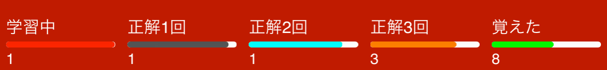
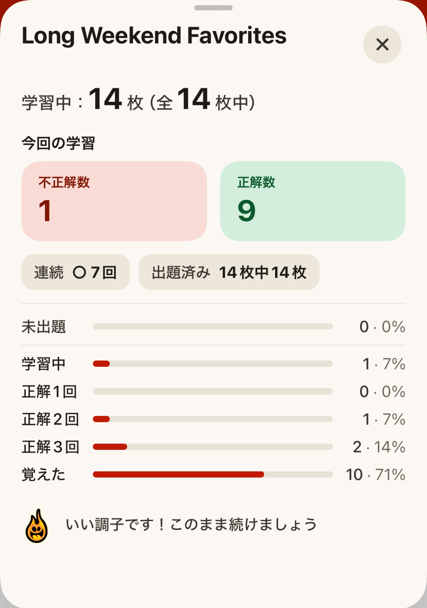

練習
練習モードでは、カードには単語だけが表示されます。答えを見るをタップ（またはカードをタップ）すると読みと意味が表示されるので、不正解か正解かを選びます。
もう知っているカードは「もう覚えた」をタップすると「覚えた」レベルに移ります。難易度設定の「覚えたカードを隠す」をオンにすると、練習に出なくなります。
アクションをタップすると、カードを学習セットに追加したり、シェアしたり、「誤りを報告」で知らせたりできます。
カードに初めて正解すると、学習中から正解1回に移ります。そのあとは正解するたびにひとつ上のレベル（正解2回、正解3回、覚えた）に上がります。

4回連続で正解すると覚えたになります。どのレベルでも不正解だと学習中に戻ります。カードの上の進捗バーをタップすると進捗ポップアップが開き、今のセットの詳しい結果が表示されます。
覚えたカードも出題されなくなるわけではなく、出る回数がぐっと減るだけです。忘れていないかどうか、Japanese in a Flash!がときどき確かめます！

目標は、すべてのカードで4回正解すること。がんばってください！